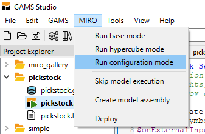
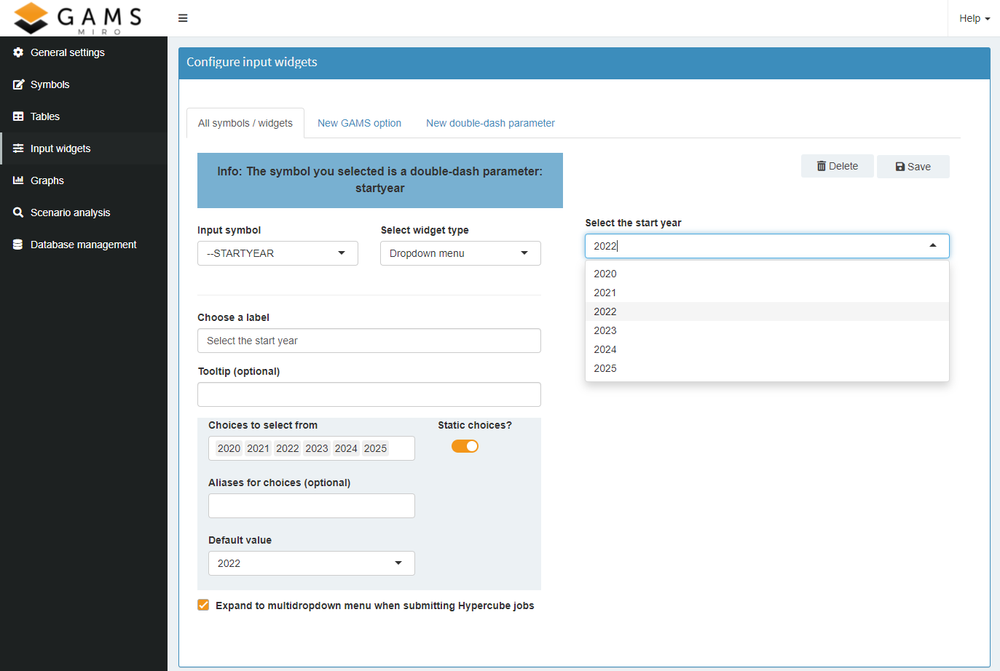
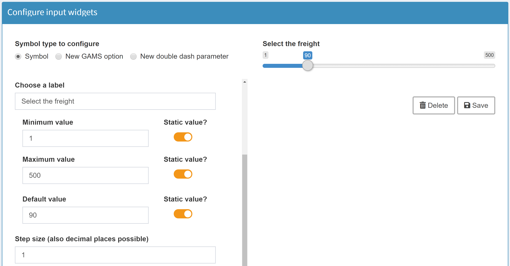
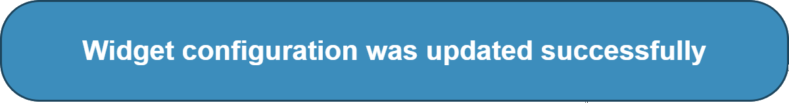

Changes made in the configuration are only effective after a restart of the MIRO application.
Configuration
Introduction
In this section you will learn how to customize GAMS MIRO. As you saw previously when creating your first app, MIRO works without any further configuration. However, you will notice that there are a multitude of configuration options that allow you to shape MIRO to fit your particular model.
The configuration can be done via a graphical configuration interface, with which you can create plots and widgets or change certain settings with a few mouse clicks, visually supported by a live preview. In addition, the configuration can also be done manually via JSON files.
The configuration mode
This chapter shows how to configure MIRO using the graphical interface.
For those who feel more comfortable writing JSON, section Configuration via JSON shows how to configure a MIRO app without using the graphical help tool.
 Optically, this mode is very similar to a classic MIRO app. The overview on the left side leads to the following categories:
Optically, this mode is very similar to a classic MIRO app. The overview on the left side leads to the following categories:
The Configuration mode is directly accessible via the GAMS Studio version of the GAMS MIRO installation, see below.

In order to launch the configuration mode from the old GAMS IDE or via the command line, besides the GAMS option statement miro=launch miromode=2 has to be added to the command line (e.g. cd path/to/model && gams transport.gms miro=launch miromode=2).
After the startup the following screen appears:
Note:
General settings
As the name suggests, general options can be set in this section. Since many of these options are self-explanatory, only a few of those that require clarification are addressed here.
+ Default scenario comparison mode
+ Use a default scenario that will be loaded on startup?
+ Specify extra command line arguments that GAMS will be called with
+ Divide input symbols into groups
+ Divide ouput symbols into groups
+ Alias for the input scalars table
+ Alias for the output scalars table
+ Scalars that should not be displayed in the scalars table but can be used in graphs etc.
+ Activate scenario functionality
+ Activate local data upload module?

+ Should users be allowed to add attachments to scenarios?
+ Should all input widgets (slider, dropdown menu, etc.) be aggregated on a single tab?
+ Include parent directory of the model folder in your model runs (e.g. because several models share files)
+ Include a metadata sheet in the Excel file (when exporting a scenario)?
+ Save trace file with each GAMS run (Hypercube mode)
+ Generate graphs for each input sheet automatically (pivot tool)
Table settings
Here you can define the general configuration of input and output tables, e.g. the design, (de-)activating the table search or the integration of certain add-ons. The settings made here always affect all input or output tables. If, for example, the editing of input tables is disabled here, all input tables can no longer be edited. If instead only individual tables or even individual table columns shall be readonly, this must be configured in section Configure widgets.
+ Example: Input tables

+ Example: Output tables

Configure widgets
Input widgets are scalar input data, which are not displayed in tabular form, but for example using a slider, dropdown menu, date selector or a checkbox. In the configure widgets section of the configuration mode you can configure widgets for:
- Scalars
- Singleton Sets
- GAMS options
- double-dash parameters
- Also the individual table settings of multi-dimensional Symbols can be customized here.
The Configure widgets section looks like this:

The symbol type to be configured can be selected at the top. The options are:
- Symbol
This option must be selected if a GAMS symbol should be configured. This includes all scalar input symbols (i.e. scalars and singleton sets) for configuring sliders, dropdown menus, checkboxes, date selector etc. but also all multidimensional symbols. For the latter a few options in their tabular representation can be customized here such as setting readonly of single columns or the whole table.
Furthermore, already configured GAMS options and double dash parameters are listed here, so that the existing configuration can be adapted / deleted.
Note:After configuring a widget, the corresponding scalar is automatically removed from the Scalars table and rendered as a separate widget instead.
- New GAMS option / New double dash parameter
As the name suggests, GAMS options and double-dash parametersscan be configured here as an input widget. All widget types are available.
Since those parameters are specified via the command line in GAMS, they can not be tagged in the GAMS code with$onExternalInput/$offExternalInput. In order that they can be set via MIRO for a GAMS run, they must be given explicitly in the configuration.Tip:If a GAMS option or a double dash parameter is set via MIRO, your GAMS model will automatically be called with these command line parameters. Those values the user selected are therefore available to the GAMS model at compile time.
Example:
If we set the double dash parameter numberPeriods to 11 and for the GAMS option mip we select CPLEX from within MIRO, then the GAMS model is run with:gams <modelname>.gms --numberPeriods=11 MIP=CPLEXWarning:The following GAMS options are reserved by GAMS MIRO and can not be configured: idir1, idir2, curdir, trace, traceopt, miro
The following widgets are available for scalar values:
Click on a widget to get more information


As already mentioned, the table settings of individual multi-dimensional symbols can also be customized here:
Example:
Let's now configure a widget for our transport model. For the scalar value freight a slider is the best choice.
From the list of available symbols we choose the desired scalar, select slider as widget tye and give it a label, which then appears above the slider.

Next we specify the upper and lower bound of the slider, the default value and the step size of selectable values.

When we are satisfied with the selected configuration, click save. A confirmation that the configuration has been updated successfully will appear:

Done!
In addition to widgets for scalar values, Configure Widgets can also be used to customize the tables of individual, multidimensional symbols. In the following screenshot, for example, the table of the GAMS parameter distance in thousands of miles is customized. Here the last table column is marked as readonly, i.e. it is not editable in the MIRO app later.

Configure graphs
In addition to the always available tabular format, multidimensional GAMS symbols can be visualized as graphs. GAMS MIRO offers comprehensive visualization options. A lot of plotting types are available and only need to be configured, i.e. adapted to your model-specific data. The selection of these pre-implemented graphics currently includes scatter plots, line charts, bubble charts, histograms, pie charts, donut charts, gantt charts, pivot tables and maps and is constantly being expanded.
It would not make sense to document all configuration possibilities of all available graphics. Therefore the following section shows a possible configuration for each graphic type. The easiest way to find out more about the possibilities is to try it yourself! Start the configuration mode and play around with the data until you see a result that you like.
To create graphics that are perfectly tailored to your data and not available in MIRO yet, you can also use MIRO's R-API. More information can be found here.
Note:
Currently already configured graphics are not preloaded at the start of configuration mode. This means that, if you want to make changes to an existing graphic after a relaunch of the configuration mode, you have to reconfigure it from the beginning.


Database management
Create database backups, restore a database, remove database tables.

Configuration via JSON files
The entire configuration of MIRO can be done via JSON files. After the first start of a MIRO app for a GAMS model, the following files are located in <modeldirectory>/conf:
<modelname>_io.json
This file is generated automatically each time a GAMS model is run with the command line parameter miro=build ormiro=launch . It lists those GAMS symbols that are marked in your GAMS model with the$onExternalInput/$offExternalInputand$onExternalOutput/$offExternalOutputtags. You won't ever have to modify this file!-
<modelname>.json
All the configuration of MIRO happens in the other JSON file <modelname>.json, e.g. transport.json. Here you can customize the general appearance of MIRO, the functionality, the language and much more. Furthermore, all the graphics and widgets are specified here.

If you want to change the language of MIRO or display a scalar input symbol as a slider, this information must be stored in the <modelname>.json file in JSON syntax. When you first launch MIRO for a new model, the <modelname>.json file is almost empty:
{}Each adjustment you want to make must be captured within the curly braces of this file.
To ensure that the configuration is correct in terms of syntax and content, all JSON files are validated against schema in the background.
Only if the validation is successful the application starts. If a schema is violated, an error message is displayed.
The schemas are located in <GAMSRoot>/miro/conf. For the <modelname>_io.json this is the schema <GAMSRoot>/miro/conf/GMSIO_config_schema.json and for the <modelname>.json the schema <GAMSRoot>/miro/conf/config_schema.json is used.
Since the latter file is used for the configuration, only the corresponding schema is of interest. You can have a look at it here.
Tip:
In the sections on configuring widgets and graphs, you can also find examples of what the configuration looks like in JSON.
Example: tables
Let's get back and extend our demo model transport. We will do this by adjusting the file transport.json in order to to adapt MIRO to our needs.
GAMS MIRO comes with several options on how you can feed your model with input data. By default, GAMS input parameters, sets and scalars are displayed in an editable table:

The corresponding GAMS declaration statement looks like this: Parameter d(i,j) 'distance in thousands of miles';.
By default, every cell in the table is editable and rows can be inserted and removed. If you only want to allow your users to edit certain tables or even only certain columns within a table, you can customize the visualization for the underlying GAMS parameter.
You do so by adding this kind of information to the transport.json file. For example, if we decide that the table for our parameter d should not be editable, this information needs to be added to your JSON file as follows:
{
"inputWidgets": {
"d": {
"widgetType": "table",
"readonly": true
}
}
}Example: scalars
As with all MIRO customizations, the information about the type of visualization of a GAMS scalar is configured via the file <modelname>.json.
Let's get back to our transport app. In the previous section we configured the table of parameter d so that it is no longer editable. We achieved this by writing the corresponding information into the transport.json file.
Now we extend the configuration of our app further by adding information about how to display the scalar value f ('freight in dollars per case per thousand miles'). Instead of displaying it in a table, we want to use a slider:
{
"inputWidgets": {
"d": {
"widgetType": "table",
"readonly": true
},
"f": {
"widgetType": "slider",
"alias": "Freight in dollars per case per thousand miles",
"label": "Select the freight costs",
"min": 1,
"max": 500,
"default": 90,
"step": 1
}
}
}When we restart our app, the scalar is now automatically removed from the Scalars table and instead rendered as a separate widget:

In the sections on widgets and charts you will find a JSON example for each widget or graph type.
Advanced topics
Command line parameters
In this section, the configuration of GAMS command line parameters via JSON is dealt with in detail. This can easily be done with the configuration mode. For those who prefer to configure directly in JSON, this section is for you.
We have already mentioned the possibility of setting GAMS command line parameters via MIRO.
Since GAMS Options and Double Dash Parameters are specified via the command line in GAMS, they can not be tagged in the GAMS code with $onExternalInput
/ $offExternalInput
. To be able to set them from MIRO, they can be specified in the <modelname>.json file. In order for MIRO to recognize whether your symbol is a double dash parameter or a GAMS option, you must prefix the symbol name with either GMSPAR_ for double dash parameters or GMSOPT_ for GAMS options.
Note:
Command line parameters can not be displayed as a table, but only as a slider, dropdown menu, checkbox, date(-range) selector or textinput.
Let's assume you want MIRO to call your GAMS model with the double dash parameter --numberPeriods, which can be set to a value between 1 and 14. You also want to be able to select the MIP solver to use. As you have licenses for CPLEX, Gurobi and XPRESS, you can only use either of these three solvers. Thus, your <modelname>.json file could look as follows:
{
"inputWidgets": {
"GMSPAR_numberPeriods": {
"widgetType": "slider",
"alias": "Number of time periods",
"label": "Select the number of time periods to solve",
"min": 1,
"max": 14,
"default": 11,
"step": 1
},
"GMSOPT_mip": {
"widgetType": "dropdown",
"alias": "MIP Solver",
"label": "Solver to use for MIP models",
"choices": [
"CPLEX",
"GUROBI",
"XPRESS"
],
"multiple": false,
"selected": "CPLEX"
}
}
}The resulting interface in MIRO now looks as follows:

Widgets with ranges
We covered the basics of how to use widgets for your scalar inputs as well as command line parameters. Let's now take a look at how widgets that return two scalars instead of one are treated. Those widgets include a slider with two handles (also referred to as a slider range) and a date range selector:
The lower value (or starting date of the date range) is postfixed with _lo and the upper value (or end date of the date range) is postfixed with _up. This means that if you specified a slider range for your double dash parameter --RANGE, you can access the lower value of the range with %RANGE_LO% and the upper value with %RANGE_UP% while %RANGE% will not be set at all. Let's look at the following example: We would like to specify a time window that we want to fetch stock data for. Thus, we define a new double dash parameter --TW that we want to be visualized in the form of a date range selector. We add the following JSON snippet to our <modelName>.json configuration file:
{
"inputWidgets": {
"GMSPAR_TW": {
"alias": "time window",
"widgetType": "daterange",
"label": "Time window",
"start": "2018-02-20",
"end": "2019-02-20",
"min": "2017-01-01",
"max": "2019-12-31",
"autoclose": true,
"noHcube": true
},
[...]
In our model, we can access the lower and upper value of this slider via the compile time variables %TW_LO% and %TW_LO%.
Dependencies among widgets
One special feature of GAMS MIRO is that you can define interdependencies between different parameters. Scalars can take two forms of dependencies to other parameters: They can feed their attributes from them; and they can manipulate the content of those parameters. An example for this is the kport model that comes with your MIRO installation (in case you selected to install the example models). Here, we have a set of scenarios that can be selected as well as a singleton set with the currently selected/active scenario. A singleton set is suited to be represented as a dropdown menu, hence we choose that type of widget here. We would like to filter our parameters based on the currently selected scenario so that we only see data that is relevant for this scenario (this type of dependency is also referred to as a backward dependency). This means that in case scenario 1 is selected via our dropdown menu, we only want to display data relevant to scenario 1 to the user. Additionally, we want the choices of our dropdown menu to be the elements of all available scenarios (also referred to as a forward dependency).

Similar dependencies can also be considered for sliders. An example is the pickstock model. Here, the number of stocks you can select for your portfolio can not be larger than the number of stocks in your dataset. Similarly, the number of days you can use to train your model must not be larger than the number of days you have in the stock price dataset. The slider attributes - namely the maximum value that can be selected - should change according to the price data the user uploads. Thus, we also have forward dependencies here.
A table that shows the currently supported forms of dependencies for the different input widgets is shown below.
| Input widget type | Forward dependency | Backward dependency | Example model |
|---|---|---|---|
| Dropdown menu | kport | ||
| Slider | pickstock | ||
| Checkbox | - | ||
| Date selector | - | ||
| Daterange selector | () | pickstock_live |
Note:
You need dependency support for a type of widget which is currently not available? Please feel free to contact us at: miro@gams.com. You added dependency support for another type of widget yourself? Send us a pull request on GitHub!
Custom Graphics
In this section we will show you how to create really sophisticated graphics like the map you find in the demo transport model that comes with your MIRO installation:
Note:
Basic maps can now be configured in the new configuration mode. The following example nevertheless shows how to use the R API for customized graphics in general.

GAMS MIRO allows you to use your own custom renderers for your datasets. Currently we only support the visualization of data, not the generation. We may add this feature at a later stage depending on the demand.
In order to visualize a dataset, you will need to write two functions: a placeholder where your graphs etc. will later be rendered as well as the rendering function itself. To learn more about the concepts of this dual component approach, visit the website for the R Shiny framework that GAMS MIRO is based upon: https://shiny.rstudio.com/. In particular, we are using Shiny Modules to realize the interface between MIRO and your custom renderer functions. The template for the two components of every custom renderer is as follows:
<rendererName>Output <- function(id, height = NULL, options = NULL, path = NULL){
ns <- NS(id)
}
render<rendererName> <- function(input, output, session, data, options = NULL, path = NULL){
}
Note that you need to replace <rendererName> with your preferred name. Let's go through this code step by step. As mentioned, for each custom renderer we need to specify two functions: one that generates the the placeholder and one that fills this placeholder with data. The name of the placeholder function must be postfixed with "Output" and the name of the function that specifies the actual rendering must be prefixed with the keyword "render". Let's get back to our transport example. We would like to see the flow of goods visualized on a map. We now write our own custom renderer which we name: transportMap. Thus, our initial template looks like this:
transportMapOutput <- function(id, height = NULL, options = NULL, path = NULL){
ns <- NS(id)
}
renderTransportMap <- function(input, output, session, data, options = NULL, path = NULL){
}
Note:
R is case sensitive and the first letter after the render keyword needs to be uppercase! Thus, if the name of your renderer starts with a lowercase letter, you need to convert it to uppercase in the render* function.
Note:
Custom renderer scripts must be located in a folder named: customRenderer in your model directory. You can name these .r files as you like.
Both functions take a number of parameters. Let's start with the placeholder function: Each custom renderer has its own ID. In order to avoid name collisions with other custom renderers or functions of GAMS MIRO, we need to prefix our input and output elements with this ID. How should we prefix our custom input and output functions, though? Fortunately, Shiny provides us with the function: NS(). This function takes the ID of our custom renderer as its input and returns a function (functions that return functions are often called closures in R) that does the prefixing for us. Thus, whenever we want to specify a new input or output element, we simply hand the ID we would like to use for this element over to this prefixing function (which in our case is bound to the ns variable). We can also specify a height for our renderer as well as the path where the renderer files are located. We can also pass additional options to our renderer functions.
Let's get back to our example. As we would like to visualize our optimized schedule on an interactive map, we choose the popular Leaflet library. Fortunately, there is already an R/Shiny interface for this library: Leaflet for R. This R package comes with the two functions: leafletOutput() that generates the placeholder and renderLeaflet() that renders a Leaflet map object created by the leaflet() function which takes our dataframe as its first argument. So let's put the pieces together and extend our code:
transportMapOutput <- function(id, height = NULL, options = NULL, path = NULL){
ns <- NS(id)
leafletOutput(ns("map"), height = height)
}
renderTransportMap <- function(input, output, session, data, options = NULL, path = NULL){
output$map <- renderLeaflet(leaflet(data))
}Note that we used the aforementioned ns() function to prefix the ID ("map") that we chose for our Leaflet element. Just like any other placeholder element, the function leafletOutput() generates an element that can be accessed via the list-like output object.
Inside our rendering function we assign this object the Leaflet map that is created by the renderLeaflet() function. In case you find the whole concept of having an output function, a rendering function, an output object etc. still very confusing, you should take a look at the offical tutorial series for the Shiny framework.
To summarize: elements that generate data can be accessed by the input object; elements that transform data to some form of visualization via the output object and any user-specific information via the session object.
The data that you want to visualize is supplied to your rendering function by the data argument - an R tibble, a data structure that is very similar to a Data Frame. The function argument path is a string (a one-dimensional character vector) that specifies the absolute path to your customRenderer directory. This is useful if you want to include external files in your custom renderer functions. Optional parameters that you want to pass to the renderer can be accessed via the argument options - a (nested) list.
Now that we are familiar with the template that every custom renderer builds upon, we are still missing one fundamental concept so that we can use our custom renderer: binding the renderer to dataset(s) we wish to visualize.
This binding of GAMS parameter to renderer function is specified - just like any other renderer binding - in the <modelname>.json file; more precisely the dataRendering section. Let's assume that in our transportation example the GAMS parameter that specifies the optimal schedule is defined as optSched(lngp, latp, lngm, latm, plant, market) where (lngP,latP) and (lngm, latm) are the coordinates of the plants and markets respectively. Our transport.json file should then look like this:
{
"dataRendering":{
"optSched":{
"outType":"transportMap",
"height":"700",
"options":{
"title":"Optimal transportation schedule"
}
}
}
}As you can see we bound the GAMS parameter optSched to our new custom renderer transportMap. Furthermore, we specified a parameter: title that can be accessed by our custom renderer via the options list.
If we decided to run our MIRO app now, we still would not be able to see anything other than a blank area. Thus, we will need to fill our renderer with some life:
transportMapOutput <- function(id, height = NULL, options = NULL, path = NULL){
ns <- NS(id)
tagList(
textOutput(ns("title")),
leafletOutput(ns("map"))
)
}
renderTransportMap <- function(input, output, session, data, options = NULL, path = NULL){
output$title <- renderText(options$title)
output$map <- renderLeaflet(leaflet(data) %>%
addTiles() %>%
addMarkers(~lngp, ~latp, label = ~plant)
)
}We have added a new placeholder for the title. Note the use of the tagList() function. Since every R function has a single return value which is either the last evaluated expression of the function or the argument to the first return() function that is encountered in the function body, we need to return a list object. A tagList() is simply a list with an additional attribute to identify that the elements are html tags.
Within our rendering function, we set the title, add the default OpenStreetMap tiles as well as some markers for our plants.
Note:
The syntax ~lngp that you see here is simply a shorthand for data$lngp - the pipe operator a(x) %>% b(y) a shorthand for tmp <- a(x); b(tmp, y)

You now know everything you need in order to get started writing your own custom renderers! Congratulations! In case you create a new renderer that you would like to share so that others can benefit from your work as well, please contact us!
Development mode and compilation phase
When GAMS MIRO is started via GAMS Studio or the command line, it is launched in the so-called development mode. This development mode has the following characteristics:
- If not yet existing, a conf/ directory with the files <modelname>_io.json and <modelname>.json is created in the model directory.
- Another directory: data_<modelname> with a gdx file: default.gdx is created that contains the data extracted from your GAMS model.
- The file runapp.R is created containing some code necessary to launch your MIRO app.
- A GAMS file: <modelname>_miro.gms is created that is necessary to run your model from GAMS MIRO.
- The configuration files <modelname>.miroconf and <modelname>_hcube.miroconf of the MIRO app are updated. They contain the configuration and initialization steps of an app and can by used by an executable for a faster launch of your app.
The following information is included in binary format:
- The metadata of all input and output symbols defined between the
$onExternalInput/$offExternalInputand$onExternalOutput/$offExternalOutputtags in the corresponding GAMS model - The configuration of graphics, input widgets, language and all other model-specific configurations for a MIRO app
- Initialization of MIRO-internal data structures
- The metadata of all input and output symbols defined between the
Since the .miroconf files are updated every time the app is started in development mode, they are always up to date with the last launch in that particular mode (base or Hypercube). If changes have been made to MIRO-specific configurations, such as the configuration of a new graphic or the specification of a new GAMS symbol to be used in MIRO, these changes are not taken into account when starting your app via an executable shortcut. Only when the app was started in development mode and the files .miroconf were updated, those changes become effective.
Note:
There is one binary configuration file each for Base mode and Hypercube mode. Like the former, the latter is only updated when the corresponding mode is started. For the Hypercube configuration this can either be done via the "Switch to Hypercube mode" button in base mode or directly from within Studio via miromode=1.
Language Files
GAMS MIRO comes with the ability to change the preferred language. Setting your preferred language results in MIRO embedding the corresponding language file where all the language specific components are specified via JSON syntax. MIRO currently ships with three of those language files: English, German and Chinese. If you would like to add another language to this list, you are more than welcome to translate one of the existing language files. The language files are located at: <GAMSRoot>/miro/conf/en.json and are validated against the JSON Schema file: <GAMSRoot>/miro/conf/language_schema.json. Note that there are sometimes placeholders in the language files. Let's take the error message: "The value '%s' for the slider: '%s' is not of numeric type." for example. %s will then be replaced with the value and name of the slider by MIRO. Thus, if you create a new language file, be sure to include these placeholders there!
If you would like to contribute your language file, so that other people can profit from your work as well, send us an email: miro@gams.com.